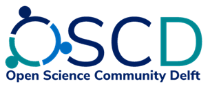
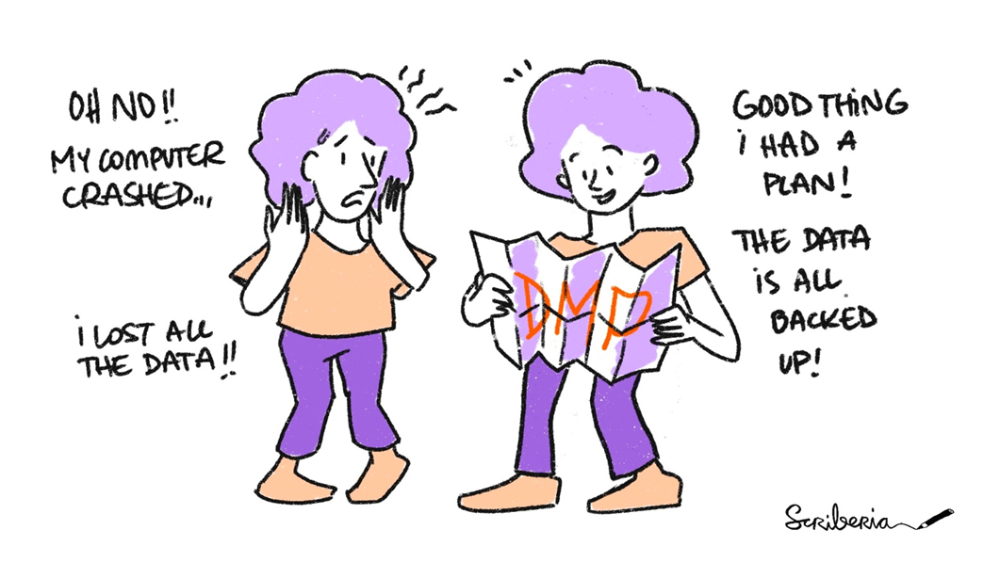

PhD onboarding day - Research Data Management & Open Science
Link to the slides
Esther is the Data Steward of the Faculty of Applied Sciences. You can reach her for anything Research Data Management & Open Science related. See intranet for all the related topics. You can also read about her PhD experiences in an interview.
Where to find information?
Email Esther or hop by 22.F131.
Available training
Research Data Management 101 (Faculty version in March! Please fill out the form if you’re interested)
The Open Life Science program is a 16 week training that you can follow for 16 weeks to learn all about applying Open Science practices to your own research project. Next round will probably start in February 2023, with the application deadline in January 2023 (to describe your project and your learning objectives).
Hands on Data/Software management support
Open Science Community Delft

Data Management plan
Any PhD starting after 1st of Jan 2020:
Write a Data Management Plan: as part of the Go/No-Go meeting in your first year.
In the PhD agreement you’ll have to describe how you’ll do this
You can fill out a plan using DMPonline (see here for a short explanation)
In your Data Management Plan you will focus on questions related to Data Management:
Where do you store your data?
How will you share your data from your publications?
Your supervisor will have to approve your plan.
More detailed information on this website.
You can also read up on the policies here: TU Delft Research Data Framework, Faculty Policy (pdf).

Do’s and Don’ts
Do’s:
Set up a Data Management plan
Ask questions
Follow workshops/courses (for credits!)
Discuss data/code/open science with your supervisor
Don’ts:
Keep everything closed (unless you have restrictions)
Share without discussing this with your supervisor/collaborators
Figure everything out yourself